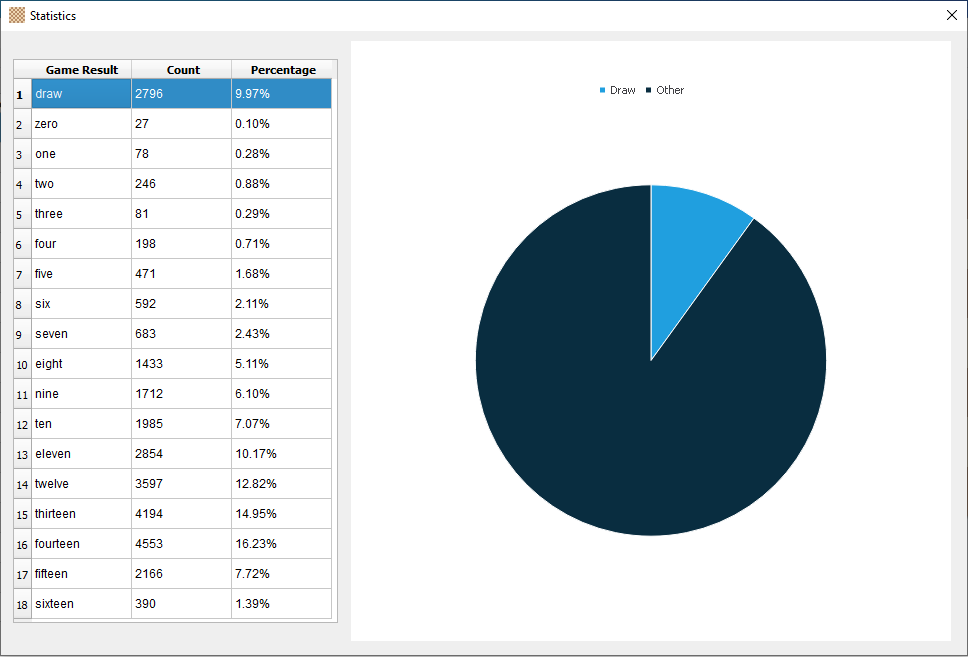
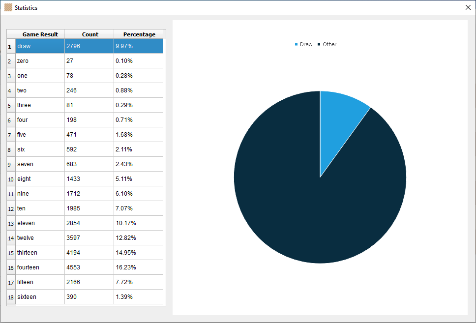
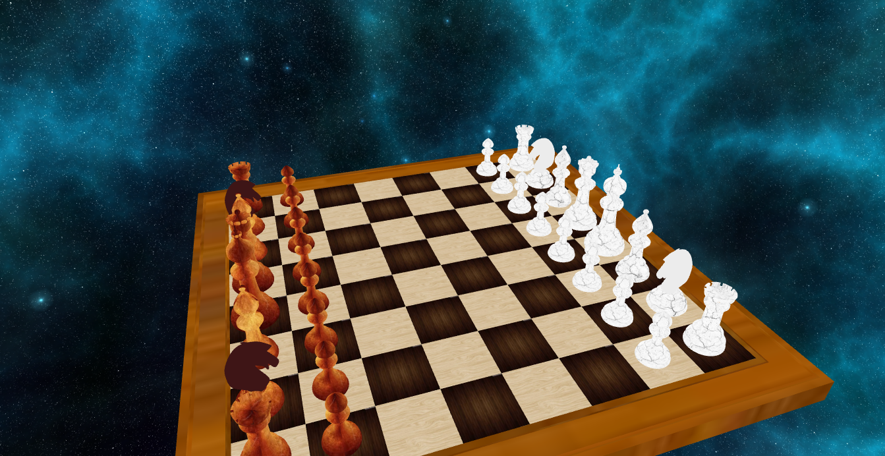
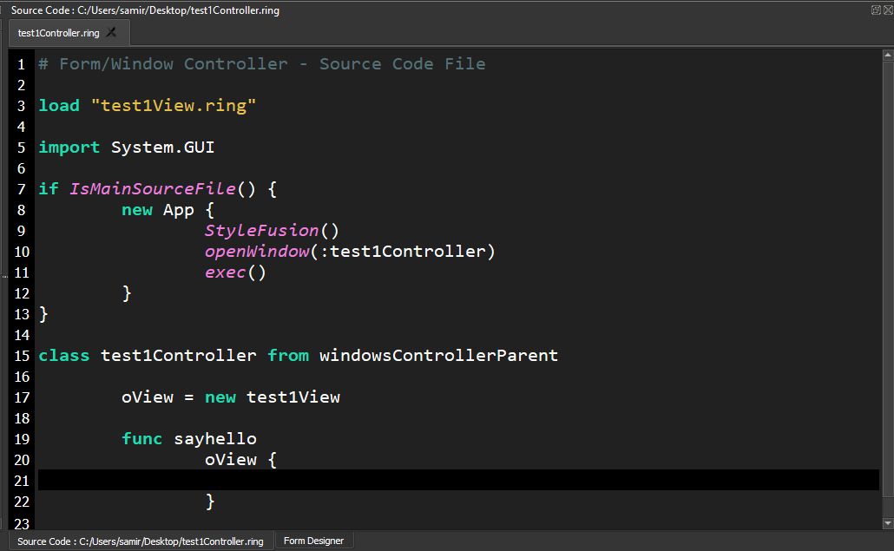
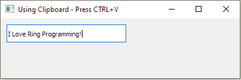
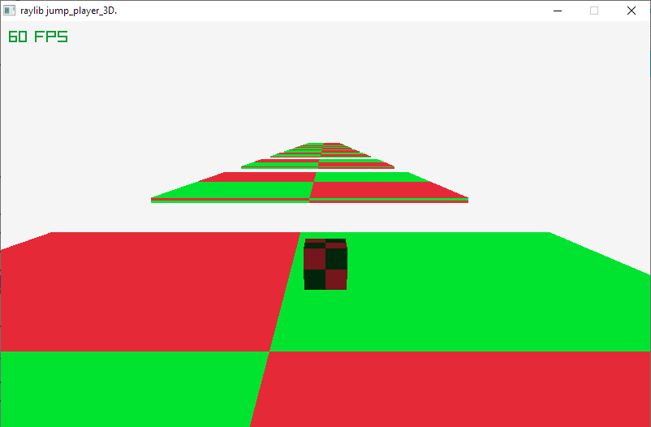

What is new in Ring 1.15?¶
In this chapter we will learn about the changes and new features in Ring 1.15 release.
List of changes and new features¶
Ring 1.15 comes with the next features!
New Arabic Book
Chess Endgame Application
Chess 3D (Qt3D Sample)
Better Ring Notepad
Better StdLib
Better RingQt
Better RingLibCurl
Heroku (Better support)
Using ‘:’ then Numbers
More Samples
More Improvements
New Arabic Book¶
We have a new printed book (Written in Arabic Language)
The Book is a about building a project using Ring to analysis the Arabic Poetry

Chess Endgame Application¶
Chess Endgame data set visualization
Also the application provides game result prediction using Microsoft Azure Machine Learning
Screen Shots:
 


Chess 3D (Qt3D Sample)¶
It’s an example about using Qt3D
We can move the board
Select a Piece and move it
Castle - King Rook side
En-Passant capture
Pawn promotion to Queen
To Install the sample using the Ring Package Manager
ringpm install Chess3D-Qt3D
ringpm run Chess3D-Qt3D
Screen Shots:

Better Ring Notepad¶
Automatic generation for the Event Function
In the Form Designer, When we determine the name of the Event Function

Ring Notepad will generate the function code automatically
Better StdLib¶
RandomList() function
Syntax:
RandomList(aList) --> List contains the same items using Random order
Example:
load "stdlib.ring"
aList = 1:5
? RandomList(aList)
RandomItem() function
Pick an item from a list (Random Choice)
Syntax:
RandomItem(aList) --> Item
Example:
load "stdlib.ring"
aList = 1:5
? RandomItem(aList)
List2Code() function
Support double quotation in list strings
Better Format - Add tabs before the items
StdLib - Split() function - Support using an empty string as delimiter
StdLib - StdFile Class - FTell() function - Better Code
Better RingQt¶
QApp Class - Clipboard() method
QString2 Class - More Methods
QMessageBox Class - setIcon() Method
QByteArray Class - Append() Method - Support Binary Data
QByteArray Class - Replace() Method - Multiple versions and better code
QTabWidget Class - TabBar() Method
QVector3D Class - Project() and UnProject() Methods
QPainter Class - DrawHSVFList() and DrawRGBFList() Methods
RingQt For WebAssembly - Download File - Support Binary File
QCompleter4 Class
Event Code size changed from 99 characters to 255 characters
Clear Error Message if the Event Code is larger than the allowed size
Example (Using Clipboard):
load "guilib.ring"
oApp = new qapp {
w = new qWidget() {
setWindowTitle("Using Clipboard - Press CTRL+V")
resize(400,100)
new qlineedit(w) {
move(10,10)
resize(200,30)
}
show()
}
oApp.clipboard().setText("I Love Ring Programming!",0)
exec()
}
Screen Shot:
Example (Using Strings):
load "guilib.ring"
o1 = new QString2()
o1.append("Ring")
oChar = new QChar(61)
? o1.leftJustified(20,oChar,False)
? o1.rightJustified(20,oChar,False)
Output:
Ring================
================Ring
Better RingLibCurl¶
curl_easy_setopt() support passing (CURLLIST *) as the third parameter
Example (From ChessEndGame Application)
# Header
mylist = curl_slist_append(null,'accept-encoding: identity')
mylist = curl_slist_append(mylist,'authorization: Bearer ' + my_api_key )
mylist = curl_slist_append(mylist,'connection: close')
mylist = curl_slist_append(mylist,'content-length: ' + len(my_body) )
mylist = curl_slist_append(mylist,'content-type: application/json')
curl_easy_setopt(curl, CURLOPT_HTTPHEADER, mylist)
Heroku (Better support)¶
From Ring 1.8 We can run Ring Web Applications in the Cloud using Heroku
In Ring 1.15 We updated the packages to use a modern Ring version
Also to avoid all of the reported problems during installation
Using ‘:’ then Numbers¶
Ring 1.15 support using ‘:’ then Numbers to define literals
Example:
? Type( :1234 )
aList = [ :1 = "One",
:2 = "Two"]
? aList[:1]
? aList[:2]
Output:
STRING
One
Two
More Samples¶
The next samples are added to the samples folder
samples/Language/AnonFunctions/anonfunc1.ring
samples/Language/AnonFunctions/anonfunc2.ring
samples/Language/AnonFunctions/anonfunc3.ring
samples/Language/AnonFunctions/anonfunc4.ring
samples/Language/AnonFunctions/anonfunclib.ring
samples/Language/Numbers/powfunc.ring
samples/Language/Strings/trim.ring
samples/Language/Strings/trim2.ring
samples/Language/Loops/loopcommand.ring
samples/General/NumberTripletsGame/NumberTripletsGame.ring
samples/General/Elevator/elevator.ring
samples/General/SmallExamples/ParametersOrder/parametersorder.ring
samples/UsingArabic/WriteArabicFile/using_QFile_write.ring
samples/UsingArabic/WriteArabicFile/using_QFile_read.ring
samples/UsingRayLib/more/ex6_jump_player2D.ring
samples/UsingRayLib/more/ex7_jump_player3D.ring
samples/UsingRayLib/more/ex8_Aiming_at_3D_moving_targets.ring
samples/UsingRayLib/more/ex9_jump_player3D_collision_detection.ring
samples/UsingRayLib/more/ex10_jump_player3D_long_way.ring
samples/UsingQt/String/QCharUnicodeValue.ring
samples/UsingQt/String/QCharUnicodeValue2.ring
samples/UsingQt/String/QStringJustified.ring
samples/UsingQt/Clipboard/QTextEditClipboard.ring
samples/UsingQt/Clipboard/UsingQClipboard.ring
samples/UsingQt/Time/timemillisecond.ring
samples/UsingQt/ByteArray/Base64.ring
samples/UsingWebLib/PathInfo/pathinfo.ring
samples/Drawing/ColorWheel/ColorWheel-Animate.ring
samples/Drawing/ColorWheel/ColorWheel-FastDraw.ring
Screen Shot:
More Improvements¶
Form Designer - Better Translation
Customers Application - New translation file (Portuguese Language)
Code Generator for Extensions - Function prototype - Trim spaces in the output type
Code Generator for Extensions - Return objects of types that have classes without init
Code Generator for Extensions - Correct parameter number when freeing unassigned pointers
RingLibUV - Better Code (When using threads)
Ring VM - Better Code (When terminating threads)
Ring VM - Support converting NULL to Zero when we compare between Number and NULL
Ring VM - ring_state_stringtokens() function
Ring VM - ring_state_scannererror() function
Ring VM - Clean error message when we have infinite recursions
Ring VM - TempName() Function - Better Code!
Ring VM - SubStr() Function - Better Code!
Ring VM - Random() & Randomize() Functions - Better Code!
Ring VM - ICO_FREETEMPLISTS Instruction - Better Implementation
Ring VM - ICO_NEWOBJ/ICO_SETSCOPE - State Management - Better Code!
Ring VM - RING_API_RETLISTBYREF - Better Code!
Ring VM - Respect Decimals() function when printing numbers inside Lists & Objects
Ring VM - Convert the String to a Number when using (=) or (!=) operators
Ring VM - ICO_INCPJUMPSTEP1 and ICO_JUMPVARPLENUMSTEP1 - Better Code
Ring VM - ring_vm_newfunc() function - Better Code
Ring Compiler - For-In Loop - Always access string characters by reference
Ring Compiler - For-In Loop - The iterator value after the loop is processed
Ring Compiler - Do-Again Loop - Avoid unnecessary JUMP instruction when using (Loop) command
Ring Compiler - When Embedding Ring in Ring - Always keep Ring keywords (Not Case Sensitive)
Ring Compiler - Scanner - Option (Comments as Tokens)
Ring Compiler - Hexadecimal Numbers - Support many zeros in the start of the number
Ring Compiler - Support Setter/Getter when using (++) and (–) operators
Ring Compiler - Display Warning (unrecognized option) when we pass wrong options to the Compiler